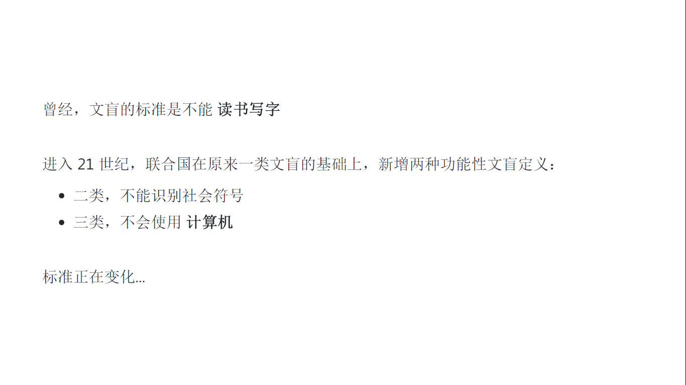

有部分朋友面临这个困惑。
- 一种是互联网行业的非技术岗，能接触到 IT 技术人员，对编程有一定认识，知道这个对工作有帮助，想学。但怕学不来，不知道怎么学。
- 另一种是完全没有接触，只是大概听说 IT 行业前（钱）景好。听说哪哪地方编程进课堂。然后碰见广告，或者大街上宣传学编程，产生了疑问：我（我的孩子）该学编程吗？
还有一种情况，已经是 IT 研发，可能非科班出身，基础薄弱，感觉补课补得有点吃力，萌生了退意。严格来说，不是目标读者，但也可以看一下一些观点，可能有一些启发。
他们会咨询我，自己 / 孩子要不要学；也有我建议亲友了解一下之后，对方表示对此毫无概念。
与此同时，网络上充斥着各种对这个行业、这个群体的误解：
- 程序员会自黑（压力大秃头、无情趣理工直男、工作时间长单身…），渲染得行业和岗位非常可怕。
- 各种少儿编程、成人培训班，会把编程渲染得无所不能，同时又非常容易学。（学会了这个，工作自动完成，学费只要9.9，一杯奶茶的钱…）
作为一个从业者，也许可以说说我的看法，给大家做个参考。（做成文章 / 演示稿，也可以避免我面对不同的提问者反复说同样的内容。）
这个演示稿为了通俗易懂，写的是口述稿，相对口语化，对于一些专业性强的内容作了简化，很多地方并不严谨 。请知悉。
部分内容借鉴了熊节 《穷学IT》中的观点。
一、学编程有用吗？
毫无疑问地说，有。接下来我们看看都在哪些方面有用。
最直接的，就是收入。
这是国家统计局 2018 年的数据，2019 年的数据要 2020 年 5 月 才公布，所以在当前时间点（2020 年 3 月），这是最新的公开数据。
我印象中，应该是金融业第一，信息和软件产业第二。不知道从那一年开始，反超了。翻过 17 年的数据也是信息产业第一。篇幅所限，只取了最新数据。
国家统计局是分开 非私营 和 私营 统计的，分别都做了图表。
可以看到，前三和后四在 两边都一样。其中排第一的信息软件服务业，平均工资是最后的农业的 3 倍多接近 4 倍（非私营），私营也有两倍。也是所有行业平均值的两倍左右。比金融业还明显高出一截，差距有 1W4（私营） ~ 快2W（非私营）。
而且需要注意的是，这是按行业分的，不是按岗位。
在互联网和软件行业，这个高薪会编程的人可以享受到。负责编程的技术研发，属于比较核心的岗位，即使不是最高薪的岗位，起码也是高于平均值的。
与此同时，其他行业里，仍然有不少会编程的人在里面享受高薪。IT 的专业人才在各行各业都有需求。换句话说，金融业的高薪、科研行业的高薪，也有会编程的人能分到一杯羹。
网上有种说法，叫『富学金融，穷学IT』。金融 和 IT 是目前中国薪资最高的两个行业。但多数行业——包括金融——都一定程度需要依靠人脉。可能只有 IT 行业，至少目前为止，还是相对公平、开放、透明的行业，是一个穷人家的小孩不靠关系、不靠家底、不靠父母帮忙、甚至自己不用溜须拍马，也可以得到较高薪资，甚至实现阶级跃迁的地方。
然后，是跨行业和长时间的高需求。
现在各行各业，生活方方面面，哪个可以脱离开计算机（或手机）和软件。
页面大小限制，上面列这些是收入前几的行业。我们再看看人均工资靠后的行业。
住宿餐饮，现在多少店只收现金（不用移动支付），手动（按计算器）算账报税？还有外卖平台，多少是只靠接电话做外卖的？是不是都要接入收款、报税、外卖的软件系统。这里关键，是要理解计算机软件在处理数据的数量和速度上，都碾压人工。
什么叫碾压？就是完全不是一个数量级，不是两倍三倍，不是十几倍，而是千倍、万倍，乃至一般人无法想像的倍数。
听众 / 读者里可能有完全外行的，我们给个具体一点的概念。一个汉字，在计算机占两到三个字节（字节的缩写是 B）；一本两百万字的书，就是六到七百万字节，最多不超过 7 MB（大约一到两首歌的大小）；一个图书馆按一万种藏书算，也就不到 100 GB（大约几部高清电影的大小）。而今天，一个规模较大的企业一天产生的数据，一个前沿实验室一天产生的数据，就是 多少 GB，甚至到了 TB（1024 GB）或者 PB（100 多万 GB）。
少量的数据，靠纸笔手算。先进一点，用电脑表格（Excel），人工操作。几倍的数据，人勤快一点，找找技巧，累死累活通个宵，还是可能完成的。但当数据量跨了几个数量级，就不是慢而已了，而是人力忙活一辈子都不可能完成。 何况人工还容易出错。靠计算机软件是唯一的出路。
当一个行业里，多数企业开始用上计算机处理核心的数据，剩下的要么跟上，要么淘汰。
未来很多行业很多职业会严重过剩，会有大量的人失业。原因恰恰跟 IT 有关：软件的自动化、人工智能，这些技术会取代人的工作。比如司机会被无人驾驶取代掉，大多数常见的场景，无人驾驶可以胜任，只有少量特殊情况由司机来开。那么司机的人数和待遇，都会降低很多。甚至传统看起来很光鲜的职业，律师、医生、教师，都会受到 IT 技术的挤压。技术先取代各个职业 大量且单调重复 的部分；然后人工智能从大量过往数据里找到规律，把 需要经验 的部分也取代了。最后剩下的，是各个职业里，最需要创造力的部分。
整个社会趋势会变成，少数富有创造力的精英收益很高，大多数一般人压力越来越大、待遇越来越差。IT行业、特别是搞技术的职业，可能是唯一一个不太受技术挤压、反而因为技术发展对人才需求越来越旺盛的行业。（当然，IT 行业自身 那些 单调重复 和 没有创造力的岗位，也会逐渐受到挤压，但是这个行业里创造出的新岗位会更多。）
为什么编程这么厉害，编程究竟是什么？不用术语，口语化的解释就是上面这个。
（使用计算机）这一点，只要不是专业性很强的软件，相信从小接触计算机 / 智能手机 的年轻一代，都能对各种软件很快上手。而这对老一辈很晚接触的人来说，却难上了很多。差别是有没有在某个年龄，形成思维定势之前，在脑海里建立起 一个事物的概念模型 。
（编程）这一步，同样地，越早接触，就会理解得越好，越能建立先发优势。

将来这个标准会继续提高。
也许有一天，编程也变成了整个社会的基本素养之一。
只是那时候，编程的门槛可能变低，甚至不再叫编程。就像现在的电脑和手机，也比十几二十年前的更先进易用。
如果你不是坐着等那天到来，等着它变容易，而是现在就学会，那就建立了先发优势。
像上面说到的，学了编程，并不代表就去软件行业当程序员。很多其他行业和岗位，都对编程能力有需求。
甚至退一万步讲，以后未必从事编程工作，光学习的过程对于锻炼逻辑思维，发现问题、解决问题的能力，都有很大的帮助。
看到这里，看到我对编程评价如此之高。
是不是说，那些课程销售说的都是真的，我（我的孩子）应该赶紧去报一个班？
别急，继续看下去。
二、不同人说的编程，可能不是一回事
课程销售说的、业内人士说的。
中小学老师说的、大学老师说的、培训班老师说的。
不同岗位说的。都不是一回事！
少儿编程班，绝大多数，说的是这种。
像积木一样，拖动，拼接，调一下数字。实现的效果多数受组件限制，创造性有限。小学低年级，感兴趣的前提下，还是推荐接触一下。培养兴趣，锻炼思维。但也就仅此而已。
从小用乐高积木拼汽车，也只是培养了兴趣，离长大了真的去做汽车非常遥远。积木学会的东西，能用来造真车的非常有限。
成年人、高年级的孩子、或者低年级但天赋超前的孩子，这个玩具就没有必要学了。
少儿编程这个市场，最鱼龙混杂。孩子太小，家长不懂。很多老师本质上就是临时培训了一下的销售。
这点少儿编程培训班说得大概和我不一样。他们鼓吹编程多重要之后，直接把学这个，等同于学编程，直接等于各种美好的未来。
当然这也算编程，但更多是玩具，离实际应用，有点远，更不会有人用来干活。
logo 是个很古老的编程语言 / 工具了。
什么是语言？
可不是英语法语这些外语，而是跟计算机打交道的『编程语言』。
编程语言也有好多种，不同语言难度不一样，能完成的任务也有差别。
这是二十几年前我小学时候的启蒙。现在基本很少有人用了。
之所以提一下，是因为：
- 跟前面的积木玩具比，它起码是个正经的编程语言，需要自己写，能实现各种复杂功能。
- 跟后面更新的工具比，它有一个画图的功能，对孩子来说，能看到自己写的效果，前期不那么枯燥，更容易坚持下来。（实际上，如果学的不是前端技术，学编程的初期要跟黑窗打很长时间的交道，完全看不到漂亮的软件界面。这种落差容易让一些朋友坚持不下去。）
因为它太老了，现在很少人用了，学会了用处也不大，一般是不会推荐的。
但是有一些人，下一页的内容可能都觉得难，需要一些马上看得见的效果，来培养兴趣。那么我会推荐先试一下 logo 的画图部分，只学画图。等培养出感觉了，还是赶紧学新的。
从这一页开始，往后提到的语言，都是真家伙了。实际干活的人也用这些，学会了理论上也能干活了。
但是一上来就干活太难了，光学理论看不到效果又太枯燥。于是就有人把学习过程写成了游戏。
Swift playground 是苹果公司开发的，学的是苹果特有的 Swift 语言。软件本身是免费的，适合家里有 iPad 的朋友。不过用途比较受限，学会了只能在苹果的设备开发，开发出来的软件也只能在苹果的设备跑。
CodeCombat 则可以学 Python、JavaScript 等多种语言，都是应用范围很广的语言。
这个软件是免费的，但是关卡不免费。现在国内是网易在代理，收费是 599/年（不带教学提示）和 899/年（带教学提示）。如果不买关卡，只有这个软件，那么你得找老师给你设计关卡。
编程这种技能，需要在实践中循序渐进地增加难度，通过不断练习学会，不是光说理论就能掌握的。而根据学习进度设计恰到好处难度的训练作业，恰恰是最麻烦的地方，一个老师可能需要教过大量的学生，在教学中逐渐调整作业难度，打磨出一套合适的习题（这里的游戏关卡，本质上就是习题）。这也是请一个好的老师贵的地方。如果还要他专门给你设计关卡，又耗时又贵，还不如直接买设计好的。599 还是 899，就要因人而异了。
自学能力特别强的，或者找了老师带的，599 就可以了。899 只是多了提示和新手关，不是真人教。当然不差钱加上提示，也挺好。
来到这页，又更接近实际工作中的应用了。
因为这些高强度的竞赛，本来就是为了筛选人才、培养人才，最后往各个工作岗位输送人才的。
在初中高中大学的语境里，学校老师讲的编程，就很可能是这些。
如果感兴趣，学习进度又跟得上，高年级的学生直接想办法学竞赛，或者参加学校的竞赛队伍，是最实际含金量最高的。出了成绩，或者仅仅有过竞赛经历，都会对后续成为职业开发者有帮助。
如果一下子达不到，可以先降低要求，报班或自学，逐渐提高到符合要求。水平够不着参加竞赛，也不要有压力，因为竞赛经历只是加分，对职业开发者都不是硬性要求，其他岗位要求就更低一些。
这些是互联网行业常见的需要用到编程技能的岗位。大概过目，不详细介绍了。
换句话说，差别特别大的岗位，虽然都是编程，但是互相未必能听懂对方说什么。
所以上面那么多页，都是编程。但是不同说话的场境，不同人说出来，差异是很大的。
三、编程难吗？
说编程没什么门槛，有一定道理。
2017年的苹果开发者大会的参加者，从最小 10 岁澳大利亚的 Yuma 小朋友（从 6 岁开始编程）到最大的 82 岁若宫雅子老奶奶（60 岁开始学计算机，81 岁开始学编程）。
业内比较有名的技术专家郝培强（网名 tinyfool），也讲过他前妻的故事，一个初中毕业的发廊小妹，到现在 IT 公司的高管。谷歌也有一个工程师，原本只是富士康流水线上的普通工人。
可以看到，没有硬性的门槛，跟贫富、人脉、学历、年龄，都没有硬性绑定。（完全不相关是不可能的，富裕的家庭、高学历、年轻必然有更多机会。但是在其他领域，穷人、低学历、老人，这些普通人可能连入场券都没有。）
但是，没有硬门槛，相对应一定会变成软实力的竞赛。如果一个技能一个岗位收入很高又毫无门槛，那么一定会有人大量涌入，最后变得不值钱。如果这种事情没有发生，说明一定有什么东西，阻拦了大多数想进入的人。
越晚起步，特别是过了大学之后，非科班起步，越往后，软性限制会越明显，你越是需要付出比别人数倍的时间和努力去弥补 。实际上大多数速成培训班里面出来的，基础都很差，在市场上竞争力不强，只有少数可以靠自己的毅力坚持学习，熬到好一点的岗位。
这是多数 培训班不会跟你说的 。他们为了招生，除了说编程重要，还会夸大学习的效果。他们会给你一个模板，把东西都做得差不多，你只要往里填点东西，或者照着做一遍，就能跑起来，让你产生学会了的错觉。但是等你离开培训班，自己从头做的时候，才发现要求稍变化一点点，你就不知所措了。这是没有打基础，没有学内功的原因，做不到举一反三。编程没有那么容易。
如果你条件不适合。如果你很容易就放弃。学编程技术这条路比想象中枯燥和艰苦，你有可能投入了时间精力最后一事无成。
可是即使这样，我仍然强烈建议你尝试。
前面说了 IT 行业和相关岗位，有可能是未来唯一人才需求还会增长的地方。只有人才需求旺盛的行业，才会有公平的竞争、对员工的重视，才会有普通人不靠背景不靠关系靠自己努力一步步上升的可能性。
在阶层固化严重的行业、在人力过剩的行业，论资排辈苦熬日子已经算好的，你会看到更多的关系户、更多的拼爹、更多的溜须拍马、更多的人情世故。你可能说我不太擅长数学、我逻辑思维不好、我英语不行。但是这些跟社会上更多更艰难的事情比，不算什么，坚持一下智商正常都是可以学会的。
四、怎么开始？
计算机配置不算太过于老旧，能随时上网下载工具，和查阅资料。如果报了班，可能在线上课。
每周拨出固定的时间学习，坚持不断地练习，以及可能需要中途补一点 数学、逻辑、英语。
我的建议是，如果你确实感兴趣，也大致符合条件，尽早开始，并且做好长期投入的准备。
以我个人的经历来说，中间会经历一些瓶颈期，让你对自己产生怀疑。这个时候，不要轻易放弃，试着跟老师前辈交流一下，找靠谱的技术社区问问题，甚至换换教材，或者多尝试多练习。突然有一天你理解之后，回头看发现不过如此。
还好现在的资料多了很多，编程工具更易用，互联网也更发达。学习的曲线会平滑很多。
可能你今天会觉得，学计算机、编程，这些事情听起来太高深了，太难了，太不适合你。其实是陌生形成的印象，都是纸老虎。成为合格的 IT 技术人员，凭技术挣到一份不错的生活，需要的知识水平并不比其他行业更高，甚至还要低得多，因为这个行业太缺人了。你只要有好奇心、勤学苦练、英文稍加强到能看懂文档，就能做到。
这个话题每个人的情况不一样。上面列的，也不是唯一的选择。需要根据每个人的情况具体地讨论。
之所以提一下这个，是因为初学者一开始就面临学什么的困惑。然后你会发现这方面的讨论很多，网上甚至争论起来，各说各有理，互不相让。作为初学者，可能会感到无所适从。
早些年我也关注甚至参与这些口水仗。而现在我会说，你要做什么更重要。我们不会争论锤子好用还是扳手好用。你决定做什么了，自然有合适的工具。
当然，你可能会说，具体到某个方向大家还是在吵，没有答案。我的答案是，随便选一个多人提到的 ，大概率不会错。多人用的，会有更多资料，讨论更充分，遇到问题容易找到解决方案。语言没那么重要，只要不是选中了一个已经被淘汰没人维护的语言，随便学好了哪门都能有所作为。等到你碰到语言的瓶颈时，大概已经有了自己选择的判断力，到那时再学一门新的，并不难。编程最后拼的，是 算法、数据结构、系统设计…… 这些内功，先练少林长拳，还是武当剑法，都是一个入口，反正最后熟练了，都很容易触类旁通。
补充一个对业内人士来说是常识，但一般人可能不知道的事实：这些平台 / 语言，基本都是免费的。至于为什么免费，展开说太长，简单说就是 它们都是由专业人士的社区（可以近似认为是公益组织）在维护，有些是技术大牛一时兴起，做了个开头之后交给社区，有些是公司开发好之后，捐献给社区。
他们这样做，不是因为要做慈善，而是一个平台 / 一个语言，不是一个公司可以维护好的，维护好也没什么人会用，造成不了影响力。所以业界通行的模式，是开辟好一块荒地，让大家都能免费来玩，来的很多人本身也是大牛，看到它不够好，都会自发地添砖加瓦。这个地方更好之后，更多人来，更多人贡献，变成良性循环。大家都从这个地方获益，然后有能力的会主动地贡献力量。环境好了之后，来得人非常得多，就是每个人买瓶矿泉水，都能赚很多。如果收门票，荒地就一开始就不会有人来。
所以一个人如果 自学能力够强、够自律 ，实际上学习编程的成本可以非常非常地低。一台计算机、再买点打基础的书，几乎就是全部的支出。一旦熬过了最初啥也不懂的新手期，网络发达的时代，网上有大量免费的教程，有文字的，也有视频的，就是要花点时间去找。像我们哪怕科班出身的，工作几年之后也有大量的技能是过时需要更新的，多数是自学，没有花额外的钱。
但我并不鼓吹非要免费学。看具体的人，具体学什么，具体的培训班 / 老师靠不靠谱。
对于小朋友，或者 0 基础的人，完全靠自律自学，比较难。难点在于：一是找到合适难度的教材和作业，循序渐进地学。太容易就没有效果，太难就会有挫败感，产生畏难心理。可初学者自己没办法判断难度。二是越是初学者，越是需要引导、反馈、监督。一个知识点的学习，像一场马拉松，已经辛辛苦苦跑到终点附近，结果迷路了，看不到终点，特别容易产生『我是不是不适合学这个』的自我怀疑，很容易就放弃了。这时一点点点拨效果就会马上不一样。
所以初学者，一是需要跟自己水平差不多的人作为同伴，可以交流和参照；二是需要一个老师的点拨。这个阶段，花点钱报一个靠谱的班，我认为是值得的。等有了一定基础，再逐渐选择一部分知识点完全看书自学，只有自己搞不定的再报班。
因为是口语化地聊，篇幅比较长，听（看）完后面，前面该忘了。我简单总结一下：
学编程有用吗？
有，锻炼思维、工作高薪、岗位需求大。
Ta 跟我说学编程，是什么意思？
看什么语境，Ta 是谁，你又是谁，想用编程干什么。
学编程难吗？
要正经做出水平，也难。起码没有某些培训班宣传的那么容易。
可世上任何事想做好，都是不容易的。编程不比学别的技能难，甚至相对性价比高，容易看到回报。
建议你试一下，再坚持一下。
怎么开始？
一台电脑、一根网线、一些教材、一点兴趣、一点坚持。
是否花钱找老师，因人而异。初学者找靠谱的老师更容易开始。

本文为本人原创，采用知识共享 “署名-非商业性使用-相同方式共享” 4.0 (CC BY-NC-SA 4.0)”许可协议进行许可。
本作品可自由复制、传播及基于本作品进行演绎创作。如有以上需要，请留言告知，在文章开头明显位置加上署名（Jayce Chant）、原链接及许可协议信息，并明确指出修改（如有），不得用于商业用途。谢谢合作。
请点击查看协议的中文摘要。